Scores of online learning startups have emerged in India in recent years to serve school-age students. More than 250 million students are enrolled across schools in urban and rural parts of the country.
Most of these students, however, will either end up not getting their dream job — or based on their skills and India’s growing unemployment figures, a job altogether. There are about 400 million people in India, or roughly a third of the country’s population, who are confronting a fundamental challenge: Not able to speak English, and lacking other skills that could prove crucial when applying for a job.
Entri provides affordable, quality coaching & educational tools to this marginalised sector of the Indian population, helping them excel at exams that would land them a job with state and federal governments. And it teaches them these courses in the language with which they are most comfortable.
Research & context
By mid 2017 the story of internet access in India was much different. The best of coaching and learning materials was not limited to colleges and premium coaching institutes anymore, all the teaching and learning was happening on youtube channels and whatsapp/telegram groups. Everyone owned a smartphone, and we started seeing a fundamental shift in learning patterns in the Indian audience. This usage of internet for learning has further skyrocketed since the COVID lockdowns began in March 2020.
Entri first started by providing a database of questions for government recruitment exams in Malayalam (one of the south indian languages) . Presently, there are more than twenty lakh questions and over 10,000 videos on Entri in five different local languages. Students who dropped out before high school or those who have already attained graduate-level degrees or have families, account for the vast majority of users of Entri. These students are looking to crack entrance exams that guarantee them a secure job in the state and federal governments.
Only 5% of all students in India are literate and proficient in English language; the rest 95% have been educated in one of the many Indian regional languages like Hindi, Kannada, Malayalam, Telugu, Tamil, etc.
It’s ridiculous that economic opportunities are bottlenecked because of the medium of learning. Skills bringing employability shouldn’t require people to be proficient in English.
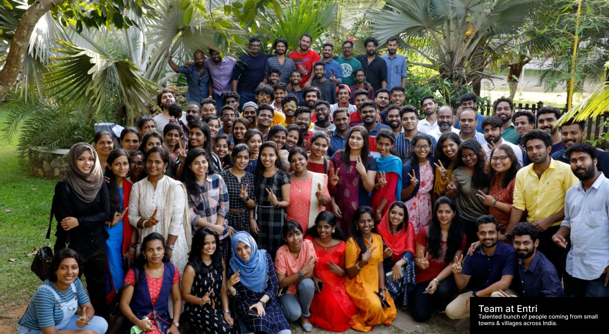
In the begining of 2019, we had conducted multiple interviews across 4 states with students preparing for govt. exams regarding their studying habits, learning material and the common issues they were facing with online learning. We observed that more than half of the students we spoke to were proficient in Hindi and their native language but not English. We also noted that many of the state govt. examinations are held both in English and native language, allowing these students the opportunity to attend the exams. However, every single existing online solution was delivering learning in English.
A detailed study of other education products also revelead to us that all of them had the same content+pedagogy, syllabus, question banks and many students prefer platforms only as a complementary tool in their preparation. These two observations helped us hone in on themes around which we based the redesign. We hypothesised that all of the competitive advantage and USP of Entri was going to come from the ‘experience layer’ of the product, in the way the content is packaged and delivered to each student in the form of personalised study plans.
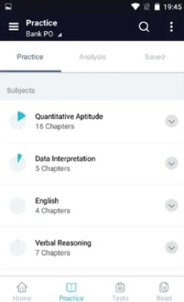
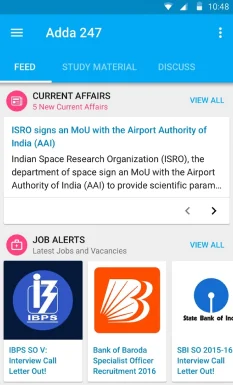
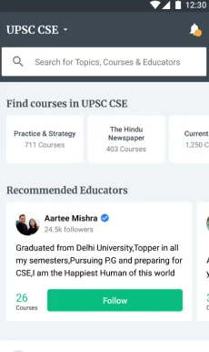
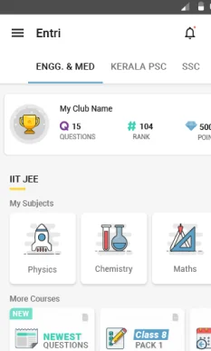
The challenges
After the initial PMF, the team at Entri did extensive market analysis and research on existing learning products and found the following to be major paint points for students across India:
- Most of the subscriptions offered were too steep in terms of pricing for the audience that’s trying to prepare for govt. jobs. Most of these students can afford not more than INR.500($7 USD) per month on online education.
- More than 90% of the available online products offered learning materials and video classes in English. This proved to be a major deterrent for a majority share of Indian students. In our surveys, more than 7/10 students clearly mentioned their ‘inability to understand english’ as a major huddle in their preparation.
The goal
The primary goal of our redesign was to re-think and improve the core learning experience within the Entri app. At the time, every new user who finished onboarding was expected to browse and find learning resources by themselves. This was causing a lot of users to use Entri only as a complementary tool in their preparation. We wanted to design and build features that enabled students to prepare for their examination entirely on the Entri app. This would further help us reach to the remote corners of India where students do not have access to coaching classes/colleges.
Along with these, we also planned to do grounds up thinking in terms of brand and visual design for all of the content within Entri app. We identified our unique positioning in terms of being a local language learning product spread across many different cultures within India.
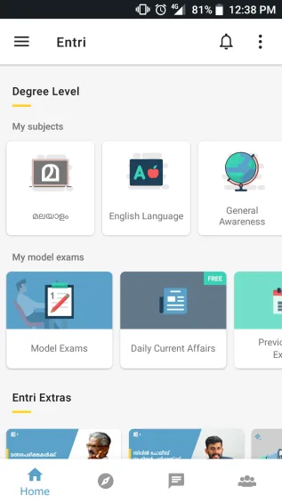
Home screen
Once a new user was onboarded successfully, they were offered all of the learning resources at once and were expected to browse and prepare by themselves. This had led to poor activation rates across languages/regions.
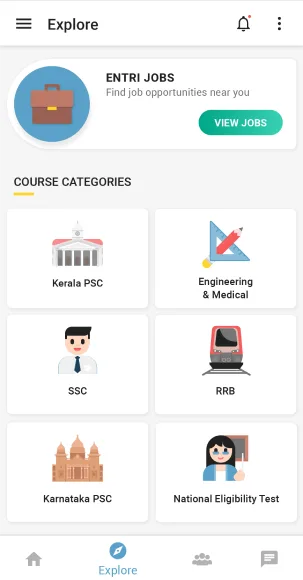
Explore screen
One the explore screen, the team had chosen to showcase other govt. job platforms available on Entri. These made little sense to the students as more than 96% of them prepare and attempt for a single govt. exam.
Brand & visual design
The design team at Entri began talking to a lot of our paid users. We asked them questions around why they were choosing Entri for their learning and preparation and the observations led us to identify our unique positioning in the overall Indian Ed-tech market.
Entri was the only online product that offered content and learning tools in non-english languages spoken by almost 400Million students across India.
In our user interviews, we also observed that the learning+prep culture and habits also varied across regions within India and no ed-tech brand was speaking to these students on an emotional level.
We decided to do a complete visual re-design of all content and learning features within Entri to highlight the uniqueness of each of the regions and the languages those students spoke on a daily basis. We wanted the new visual language and interface elements to look attractive and trustworthy, persuading even the least-tech savvy users to feel comfortable and confident in their preparation.
Redesign & repackage video courses
Illustration style that is true to regional language & cultural factors.
This new visual language in our learning materials further enforces an underlying subconscious familiarity/approachability to the product.
Students across India are used to seeing such artifacts across school textbooks and offline learning materials. None of the online ed-tech brands in India are borrowing this unique style/language from the distinctly Indian education culture.
Video courses, old design
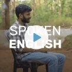
New design
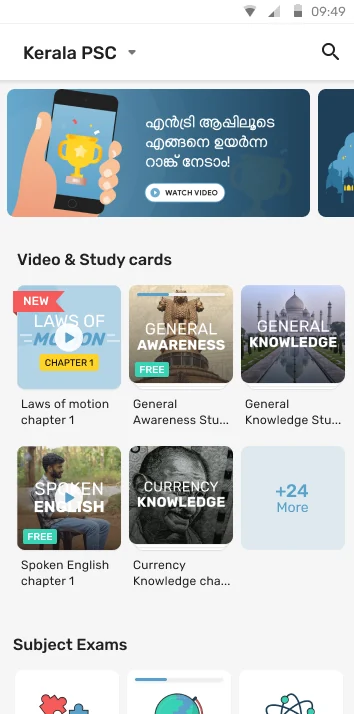
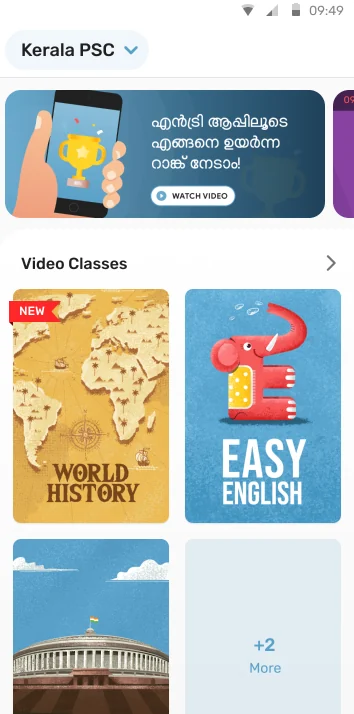
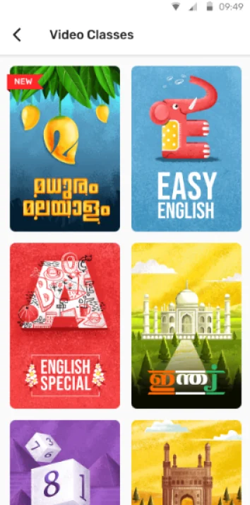
Visual system for video thumbnails across languages and exams
We developed a new modular thumbnail system which could work across languages and exams within Entri. This standardisation in thumbnail visuals extends beyond the app into Entri’s Youtube channels and social channels, enforcing brand recognition and forming trust amongst students who are exposed to an ocean of non-quality learning videos on YouTube.
Video thumbnails, old design
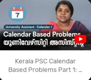
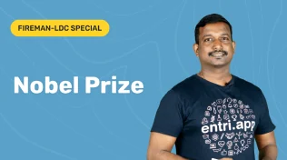
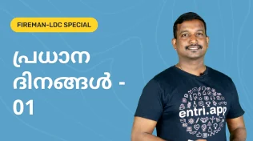
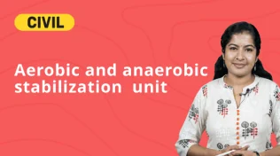
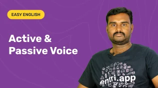
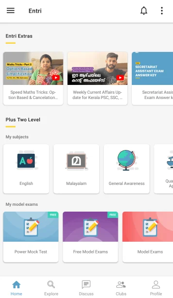
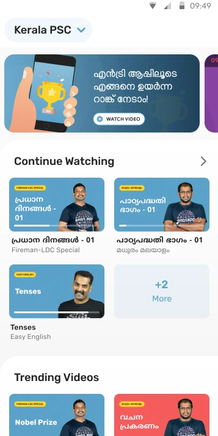
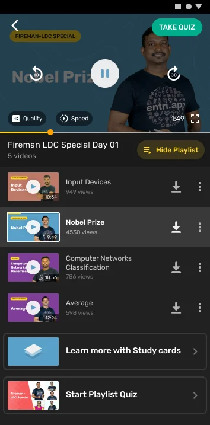
As mentioned earlier, we also redesigned the core learning experience across the app. We wanted to take Entri app from a complementary tool towards being the only learning product a students needs. We planned to design and build features that enabled students to prepare for their examination entirely on the Entri app. Based on our research and product brainstorms, we narrowed down on a couple of comprehensive features that drew upon existing offline behaviours in learning.
One of the primary reasons most surveyed students chose to attend paid coaching classes was the presense of a dedicated teacher and enforced structure to their learning/preparation.
Study plans: path based learning
Previously, all newly onboarded users were expected to browse and find learning materials within the app. This had made it very difficult for new users to achieve ‘activation’ by consuming learning materials that are relevant to their preparation.
Together with the Content and Pedagogy teams, we came up with a linear learning path that every student within Entri could follow to gain expertise in their subjects. We also designed this feature to encourage course completion and effective learning.
We designed each ‘lesson/step’ in the path to be comprised of both learning and practicing elements. It consists of a couple of videos where concepts are taught, followed by summarised notes in the form of Study Cards and a lesson quiz to make sure that the student has understood the concepts and is proficient in them.
Every user who chooses to follow the Study Plan, has to complete previous lessons to unlock next lesson, this ensures effective learning and helps even the most amateur learner to gain expertise in their preferred subjects.
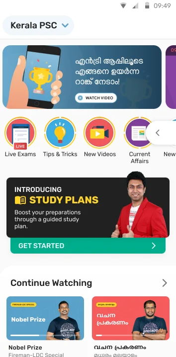
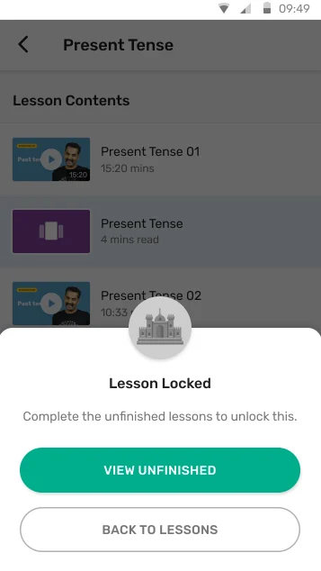
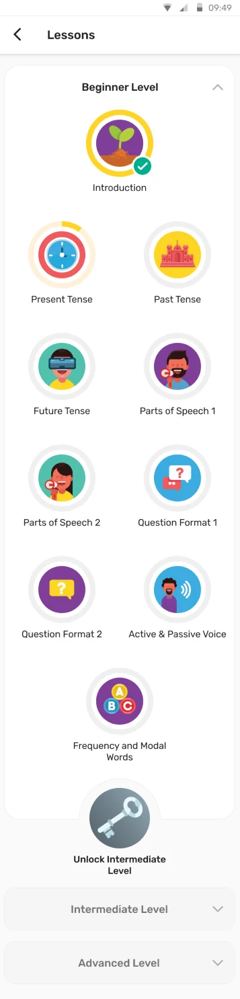
Another strong behavioural pattern we observed in offline learning and coaching classes was that of peer-to-peer learning and competing. As an effort to introduce similar behaviour within Entri, the design team along with the partnership of content team designed a feature we called Super Quiz.
Super Quiz allows any two Entri users to challenge each other in a short timed quiz about their favorite subjects.
Super Quiz: peer-to-peer real-time quiz
Learning and preparing online can become a lonesome journey. We could see evidence of this in the second week retention numbers for our new users. There was a significant dip in daily practice/engagement once a new user had discovered relevant content in the first day/week. We designed and built Super Quiz to allow both casual and serious students to challenge each other in short, real-time quizzes.
Since launching, this feature has helped us increase activation of new users significantly and improved week-on-week retention of both free and paid users by more than 30%.
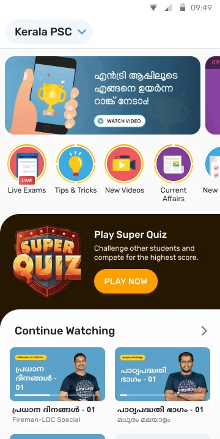
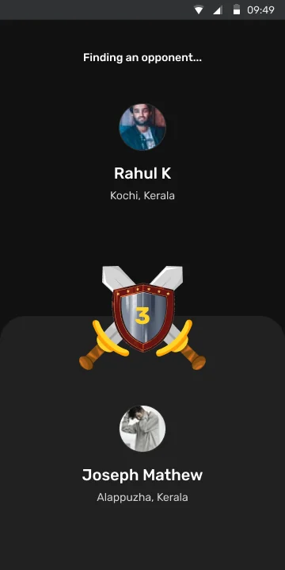
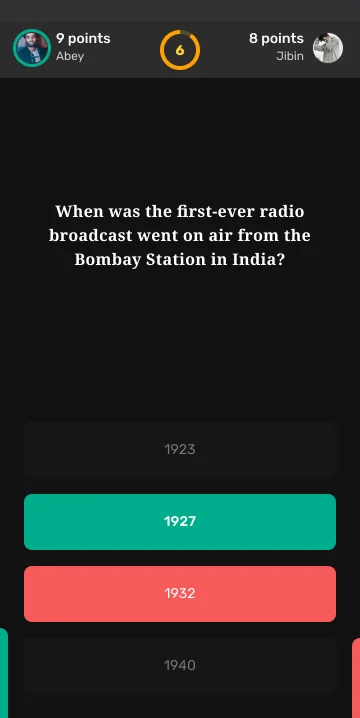
In the 3rd year of Entri, we were getting significant amount of requests from our paid users regarding the need for personalised, weekly mentorship and coaching program within Entri.
While our existing content allowed students to begin their learning journey, they still faced significant hurdles during their preparation. Getting solutions to their doubts immediately, re-learning a concept to understand it thoroughly and the enforcing presence of a mentor during each stage of their learning were some of the solutions missing in Entri.
Entri was one of the few chosen products from India that recently got selected for the Global Apps Made by Indians award category from the Google Playstore.
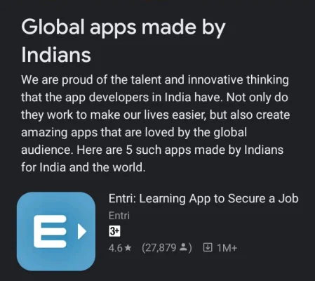
Future track
In Feb 2020, Entri closed a $3.1 million Pre-Series A financing round, led by Good Capital.
The team at Entri is gearing up to introduce 50 additional courses to the platform and reach 400M more users within India, Bangladesh and Pakistan.
Entri’s revenues have surged 150% in the last three months and its annual recurring revenue (ARR) has reached $2 million. With a focus on guided, high-ticket offerings, the next aim is to scale Entri’s ARR to $10 million by this year.
Credits
- Illustrations
- Nizar K, Brand Designer at Entri
- UI design
- Arun S, Sr. Product Designer at Entri